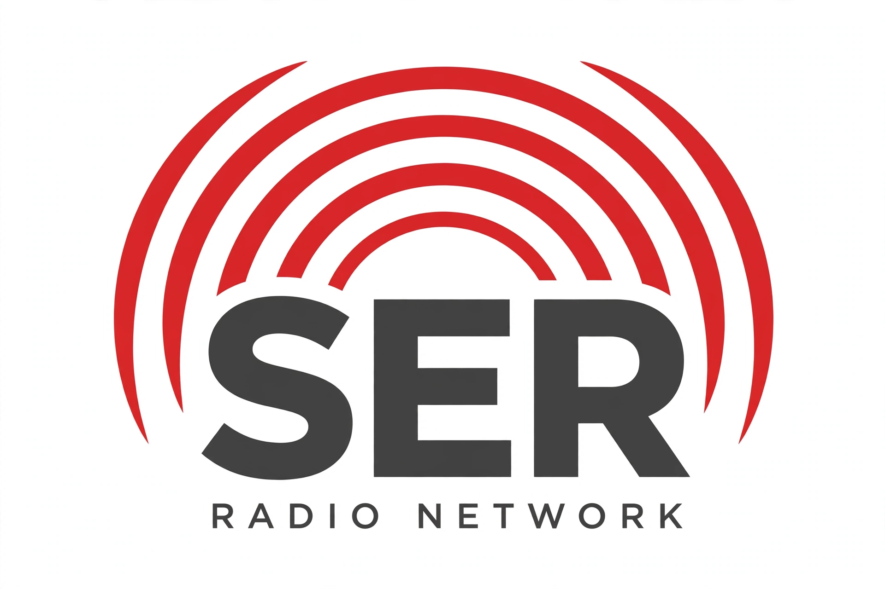

| Cadena SER | |
|---|---|
 | |
| First air date | 1924 (as Radio Barcelona) |
| Headquarters | Madrid, Spain |
| Owner | PRISA Radio (PRISA group) |
| Format | News, talk and sport |
Cadena SER (SER stands for Sociedad Española de Radiodifusión) is Spain's premier radio network and the country's oldest broadcaster, with the largest audience share in Spanish radio. It is owned by PRISA, the media group long led by Juan Luis Cebrián, and is known for its news and discussion programmes.
The network traces its origins to Radio Barcelona EAJ-1, which began broadcasting in 1924. The SER network was formally created in 1940 from the Sociedad Española de Radiodifusión. During the Franco dictatorship its news was constrained by censorship, but after the transition to democracy it became the leading private news network, acquiring a reputation for fast, influential journalism. Its role on the night of the 23-F coup attempt in 1981 — "la noche de los transistores", when Spaniards followed events on radio — is remembered as a defining moment.
Flagship programmes include the morning show Hoy por hoy, the midday sports programme Carrusel Deportivo and the late-night sports show El Larguero. Its news bulletins, Hora 25 among them, have historically set the agenda in Spanish politics.